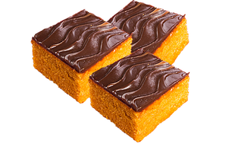

Bolo de Cenoura
Ingredientes
- 3 cenouras médias raspadas e picadas
- 3 ovos
- 1 xícara de óleo
- 2 xícaras de açúcar
- 2 xícaras de farinha de trigo
- 1 colher (sopa) de fermento em pó
- 1 pitada de sal
- Manteiga para untar
- Farinha para polvilhar
Modo de Preparo
- Bata no liquidificador todos os ingredientes, acrescentando a farinha aos poucos.
- Unte e enfarinhe uma forma de furo no meio. Despeje a massa nela. Asse em forno médio preaquecido por 40 minutos. Tire do forno, espere amornar e desenforme.